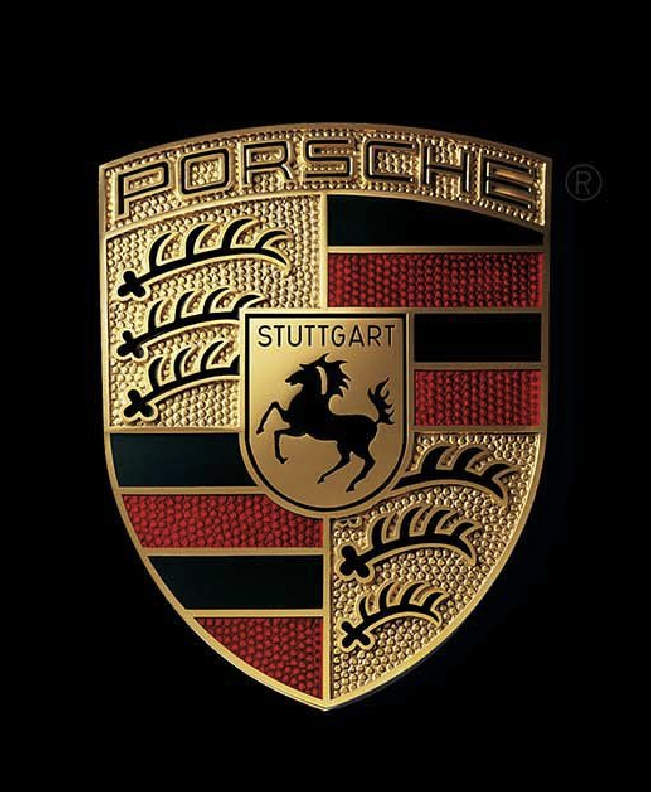

Porsche to niemiecka marka, która znana jest głównie z produkcji
sportowych samochodów. Na rynku istnieje od 1931 roku, ale dopiero
kilkanaście lat po jej założeniu powstało pierwsze auto.
Nazwa marki pochodzi od jej założyciela – Ferdynanda Porsche. Niemiecki
inżynier doświadczenie w konstruowaniu samochodów zdobywał pracując da
marki Daimler. Skonstruował m.in. Mercedesa Compressor Sports, który w
1923 roku zwyciężył w prestiżowym wówczas wyścigu Targa Florio.
W 1947 roku przedsiębiorstwem zaczyna zarządzać syn Ferdynanda – Ferry,
ale ojciec nadal odpowiada za jego rozwój. Ważną datą w początkowym
okresie działalności jest rok 1948, gdyż wtedy zostaje zaprezentowany
pierwszy seryjny pojazd. To Porsche 356, które współdzieliło części z
Volkswagenem Garbusem. Miało te same elementy zawieszenia, a za jego
napęd odpowiadał 4-cylindrowy silnik boxer chłodzony powietrzem. Miał on
pojemność 1,1 litra i moc 40 KM. Warto dodać, że samochód w późniejszym
czasie był wielokrotnie modernizowany, a jego ostatnie wersje miały
silniki konstrukcji Porsche. Pojazd produkowano do 1965 roku, a jego
nazwa nawiązuje do tego, że był to 356 projekt Ferdynanda Porsche. Kiedy
założyciel marki umiera w 1951 roku, zmodyfikowany model 356 zdobywa
pierwsze miejsce w 24-godzinnym wyścigu Le Mans w swojej klasie. Po
śmierci Ferdynanda Porsche, firma nadal stara się budować sportowe auta
zgodnie z jego filozofią i wytyczonymi przez niego założeniami. W 1953
roku swoją premierę ma Porsche 550 Spyder. Model napędzany był mocnym
czterocylindrowym silnikiem rozwijającym moc od 100 do 135 KM i z
sukcesami startował w wielu międzynarodowych wyścigach. Kilka lat
później pojawiła się zmodyfikowana wersja modelu 356 – 356 Carrera 1600,
o pojemności silnika 1,6 litra.
W 25. rocznicę istnienia firmy halę montażową opuszcza 10-tysięczny
egzemplarz modelu Porsche 356. Warto też odnotować, że do tej pory
pojazdy Porsche odniosły 400 zwycięstw w wyścigach.
Ważnym rokiem dla historii marki był rok 1963. Wtedy swój debiut ma
Porsche 911 – flagowy model niemieckiej firmy zaprojektowany przez
Ferry’ego Porsche. Za jego napęd odpowiadał chłodzony powietrzem
6-cylindtowy silnik własnej konstrukcji, który produkował 130 KM mocy i
współpracował z 4- lub 5-biegową manualną skrzynią biegów. Warto dodać,
że początkowo pojazd produkowany był pod oznaczeniem 901, a nazwa na 911
została zmieniona po protestach Peugeota. Pojazd stale jest
unowocześniany, a na swoim koncie ma wiele sukcesów w rajdach i
wyścigach. Wraz z rosnącą mocą silników pojawiła się nazwa Carrera,
która miała podkreślać, że ta wersja 911 ma już większy silnik. W 1974
roku zadebiutował model 911 Turbo 3,0. Doładowany silnik rozwijał moc
260 KM przy 5500 obrotach na minutę. Trzy lata później debiutuje
natomiast 911 Super Carrera, a jego silnik ma pojemność trzech litrów i
moc 180 KM. Bardzo dobrymi osiągami mógł także pochwalić się
zaprezentowany również w 1963 roku model 904 Carrera GTS, który również
przyciągał wzrok swoją stylistyką. Potem pojawiają się modele 912 i 914.
Ten ostatni powstał we współpracy z Volkswagenem i przez wielu nie był
uznawany za prawdziwy pojazd Porsche. Z tego względu często nazywany był
Volks-Porsche. Należy też dodać, że niewiele egzemplarzy miało
zamontowany oryginalny, dwulitrowy, sześciocylindrowy silnik produkcji
Porsche.
W latach 70. XX wieku postanowiono stworzyć podział na małe modele
czterocylindrowe, średnie sześciocylindrowe i duże z silnikiem o ośmiu
cylindrach. W 1975 roku debiutuje Porsche 924, a następnie większy model
928. Pierwsze auto miało silnik umieszczony z przodu, skrzynię biegów z
tyłu i szybko okazało się hitem na rynku. Taki układ nazwany został
transaxle. W ciągu 10 lat produkcji powstało około 120 000 egzemplarzy
pojazdu. Drugie z przywołanych aut produkowane było do 1995 roku i
otrzymało tytuł „Samochodu Roku”.
W 1986 roku debiutuje Porsche 959, które posiada napęd na cztery koła i
zwycięża rywalizację w Rajdzie Paryż-Dakar. W 1996 roku odbywa się
premiera pierwszej generacji Porsche Boxstera. To roadster z centralnie
umieszczonym sześciocylindrowy silnikiem o pojemności 2,5 l. Jego nazwa
to połączenie słów „boxer” oznaczającego silnik o przeciwległych
cylindrach, a także roadster, odnoszącego się do typu nadwozia.
W 1997 roku Porsche zaprezentowało w modelu 911 pierwszy 6-cylindrowy
silnik chłodzony cieczą, umieszczony horyzontalnie. Pod koniec stulecia
rozpoczęły się prace nad terenowym Cayenne. Średniej wielkości SUV
debiutuje w 2002 roku, a jego bliźniaczą wersją jest Volkswagen Touareg.
Obecnie na rynku dostępna jest druga generacja auta. W 2004 roku pojawia
się model Carrera GT, który produkowany był do 2006 roku. Pod jego maską
pracował silnik V10, który produkował 612 KM. Następnie koncern
wprowadza model Panamera. Oznaczenie pochodzi od nazwy legendarnego
wyścigu La Carrera Panamericana. Najmocniejsza wersja Turbo S napędzana
jest silnikiem 4.8 V8 o mocy 570 KM. Auto rozpędza się do 100 km/h w 3,8
s oraz osiąga prędkość maksymalną 310 km/h. Jednym z najnowszych
pojazdów niemieckiej marki jest model Macan. Jego nazwa z języka
indonezyjskiego oznacza tygrysa, a pojazd został pokazany w 2013 roku
podczas Salonu Samochodowego w Los Angeles. Macan S posiada 3.0-litrowy
silnik biturbo V6 o mocy 340 KM, a dzięki niemu pojazd przyspiesza do
100 km/h w 5,4 sekundy. Drugim wariantem jest Macan S Diesel, któremu
motor o mocy 258 KM pozwala maksymalnie rozpędzić się do 230 km/h.
Najwyższą moc posiada Macan Turbo. Silnik V6 biturbo o pojemności 3,6
litra produkuje moc 400 KM, a przyspieszenie do 100 km/h zajmuje 4,8
sekundy.